開始前請準備
- 申請測試時登記的 Gmail
- Android 14 或以上手機
- 已安裝或系統內建的 Health Connect
- 約 10 分鐘測試時間
1確認 Google Play 測試資格
在 Android 手機上開啟電子郵件通知，點選其中的內部測試連結。
確認頁面登入的是申請時登記的 Gmail，然後點選「成為測試人員」。 成功後，頁面會顯示你已加入測試，並提供前往 Google Play 下載的連結。
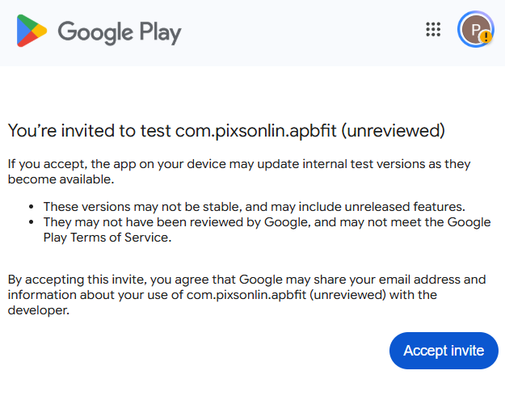
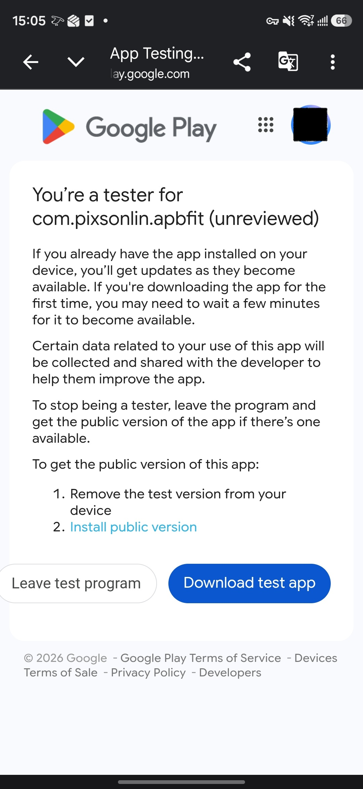
2安裝或更新 APBFit
從測試頁面前往 Google Play，點選「安裝」或「更新」。
APBFit 不會出現在一般商店搜尋結果中，請從電子郵件通知 的內部測試連結進入。
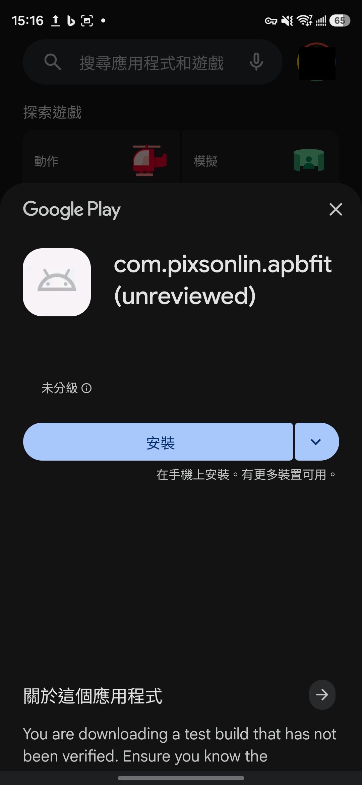
看不到安裝按鈕？
- 確認 Play 商店使用的是申請時登記的 Gmail。
- 等待 5～10 分鐘。
- 重新開啟電子郵件通知中的測試連結。
3使用 Google 帳號登入
開啟 APBFit，選擇申請測試時登記的 Gmail。
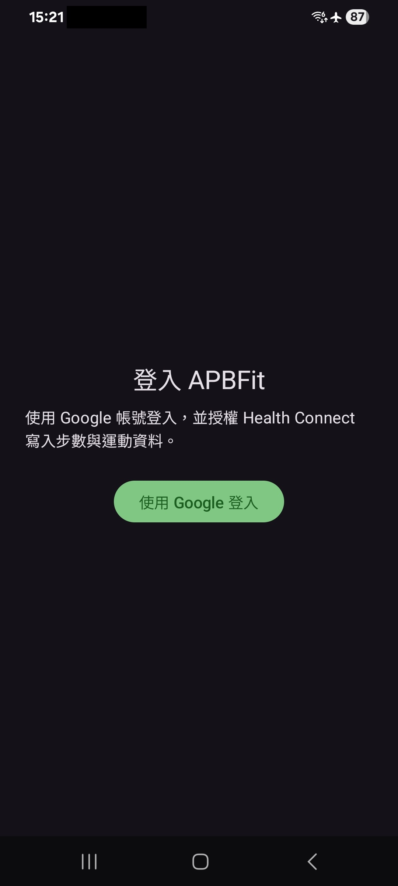
成功登入後，APBFit 首頁會顯示目前登入的 Gmail。這也代表 OAuth 測試資格運作正常；Google 不會另外提供 OAuth 測試名單查詢頁面。
4授權 Health Connect
首次使用時，APBFit 會要求 Health Connect 權限，請允許：
(有的手機不會自動跳出權限提示，這時請直接跳至步驟5手動開啟即可)
- 步數讀取與寫入
- 距離寫入
- 運動紀錄寫入
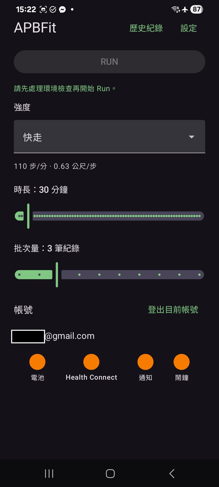
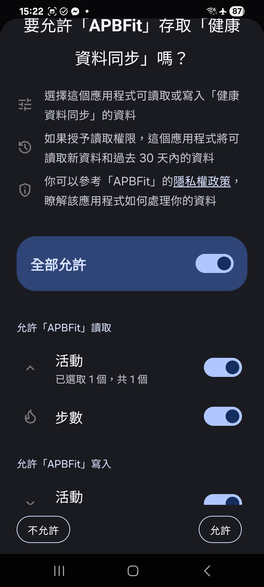
5確認環境狀態
回到 APBFit 首頁後，確認畫面下方的 Health Connect 狀態為綠色。同時也請確認電池、通知及鬧鐘皆為綠色。
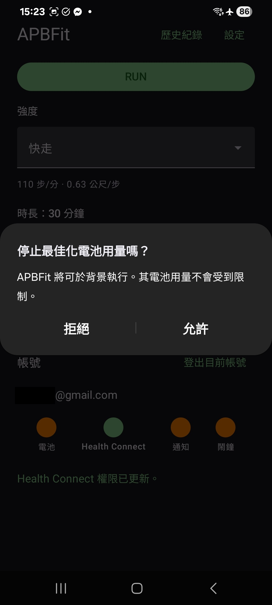
若任一個按鈕顯示橘色，請點選該圖示並依畫面提示完成設定。
6設定並開始第一次 Run
開始前請確認權限已授權，並且四個環境狀態燈為綠色。
第一次測試建議使用簡短設定：
- 時長：5 分鐘
- 強度：任一預設強度
- 批次量：維持預設值
確認設定後，點選畫面上方的「RUN」。
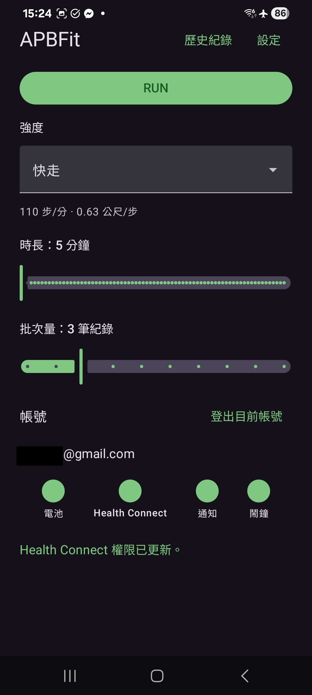
Run 開始後會顯示目前狀態、已進行時間、剩餘時間、已寫入步數與寫入進度。
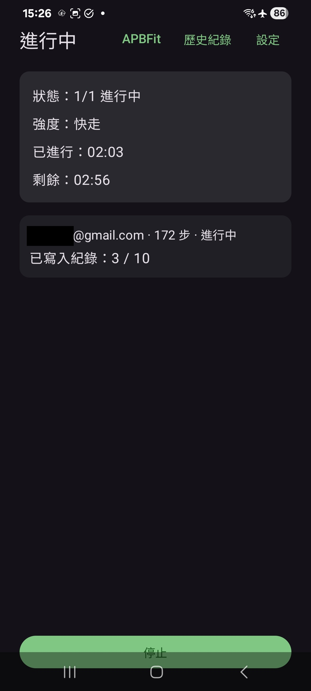
7確認 Run 完成
Run 完成後，開啟「歷史紀錄」，確認最新紀錄：
- 狀態為「已完成」
- 已寫入步數大於 0
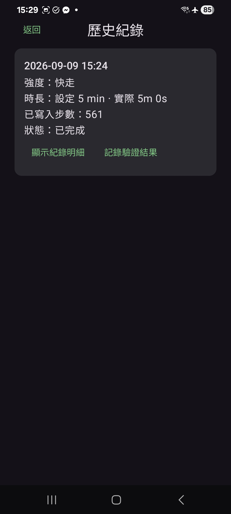
8確認 Health Connect 紀錄
從 APBFit 的「設定」頁面點選「Health Connect」以開啟 Health Connect， 然後點選「資料和存取權」-> 「步數」。
確認 Health Connect 中可以看到 APBFit 寫入的步數、距離或運動紀錄。 不同手機品牌或 Android 版本的 Health Connect 畫面可能略有不同。
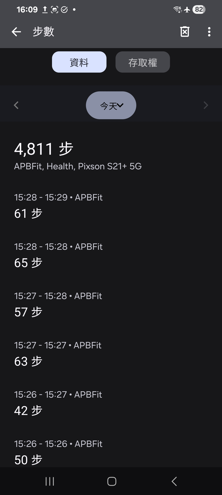
9選擇性檢查第三方應用
若你有使用支援 Health Connect 的第三方步數應用或遊戲：
- 確認該應用已設定為從 Health Connect 讀取步數。
- 等待該應用正常同步。
- 確認是否能讀到本次 Run 的步數。
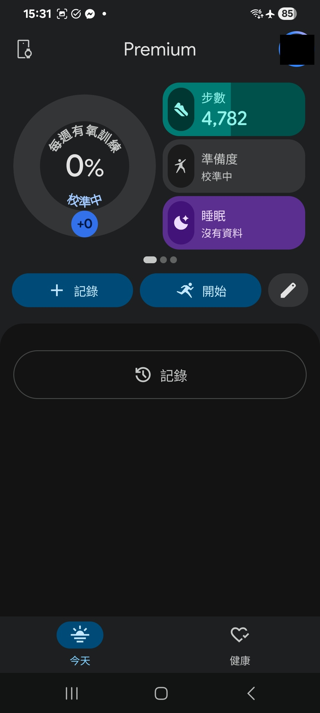
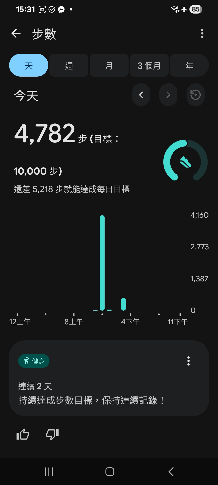
10提交完成回報
完成測試後，請使用電子郵件通知中的完成回報連結，回報：
- 安裝及登入是否成功
- Health Connect 授權是否成功
- 是否完成至少一次 Run
- Health Connect 是否看到紀錄
- 第三方應用是否讀到步數
- 遇到的錯誤或異常
需要協助？
請直接回覆電子郵件通知，或寄信至 pixson.srv@gmail.com。
若要提供錯誤截圖，請先遮蔽 Gmail、通知及其他個人資料。